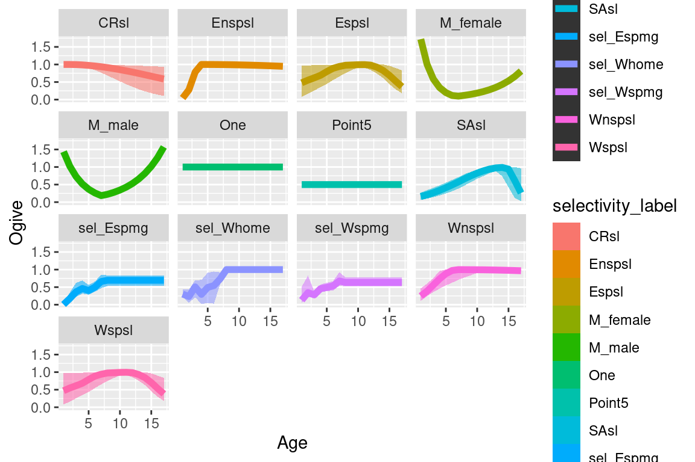
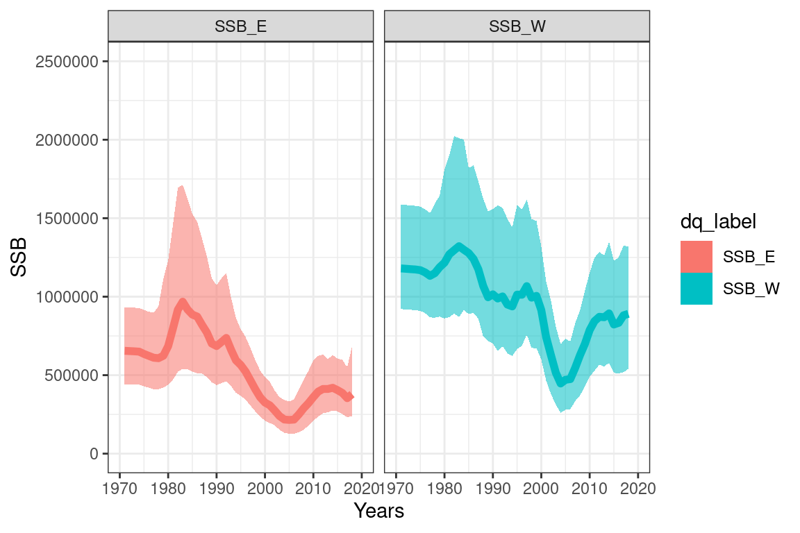

Chapter 6 MCMC
6.1 Read in models
## This is bayesplot version 1.9.0## - Online documentation and vignettes at mc-stan.org/bayesplot## - bayesplot theme set to bayesplot::theme_default()## * Does _not_ affect other ggplot2 plots## * See ?bayesplot_theme_set for details on theme setting6.3 better SSB plot with transparient ribbons
p <- c(0.025, 0.5, 0.975) ## confidence intervals
p_names <- map_chr(p, ~paste0(.x*100, "%"))
p_funs <- map(p, ~partial(quantile, probs = .x, na.rm = TRUE)) %>%
rlang::set_names(nm = c("low", "mid", "upp"))
p_funs## $low
## <partialised>
## function (...)
## quantile(probs = .x, na.rm = TRUE, ...)
##
## $mid
## <partialised>
## function (...)
## quantile(probs = .x, na.rm = TRUE, ...)
##
## $upp
## <partialised>
## function (...)
## quantile(probs = .x, na.rm = TRUE, ...)## used over a data frame
#quantile_ssb_df = ssbs %>%
# group_by(years, dq_label) %>%
# summarize_at(vars(values), p_funs)6.3.1 selectivities
selectivity_df = get_selectivities(cas2_tab)
quantile_selectivity_df = selectivity_df %>%
group_by(bin, selectivity_label) %>%
summarize_at(vars(selectivity), p_funs)
ggplot(quantile_selectivity_df, aes(x = bin)) +
geom_ribbon(aes(ymax = low, ymin = upp, alpha = 0.5, col = selectivity_label, fill = selectivity_label), lwd=0) +
geom_line(aes(y = mid, col = selectivity_label, group = selectivity_label), size =2, alpha = 1) +
facet_wrap(~selectivity_label) +
labs(x = "Age", y = "Ogive", col = "Model", linetype = "Model")
6.3.2 Derived quantities
# plot Ssbs
ssbs = get_derived_quanitites(model = cas2_tab)## getting values for SSB_E
## getting values for SSB_W#ssbs_mpd = get_derived_quanitites(model = mpd)
#head(ssbs)
#ssbs_mpd$years = as.numeric(ssbs_mpd$years)
ssbs$years[ssbs$years == "initialisation_phase_1"] = 1971
quantile_ssb_df = ssbs %>%
group_by(years, dq_label) %>%
summarize_at(vars(values), p_funs)
quantile_ssb_df$years = as.numeric(quantile_ssb_df$years)
##
quant_ssb_plot = ggplot(quantile_ssb_df, aes(x = years)) +
geom_ribbon(aes(ymax = low, ymin = upp, alpha = 0.5, col = dq_label, fill = dq_label), lwd=0) +
theme_bw() +
geom_line(aes(y = mid, col = dq_label, group = dq_label), size =2, alpha = 1) +
xlab("Years") +
ylab("SSB") +
ylim(0, 2500000) +
xlim(1970, 2020) +
scale_alpha(guide = 'none') +
#geom_line(data = ssbs_mpd, aes(x = years, y = values), inherit.aes = F, col = "black", size = 1.5) +
facet_wrap(~dq_label)
quant_ssb_plot